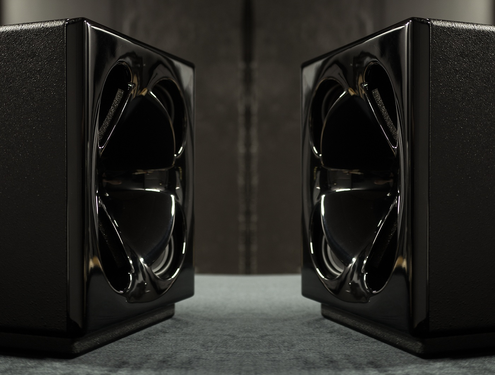
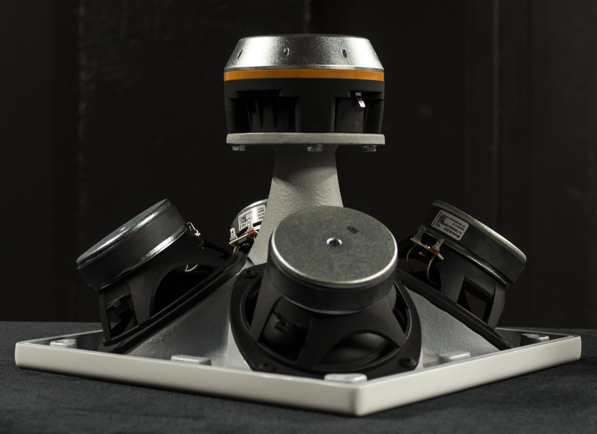
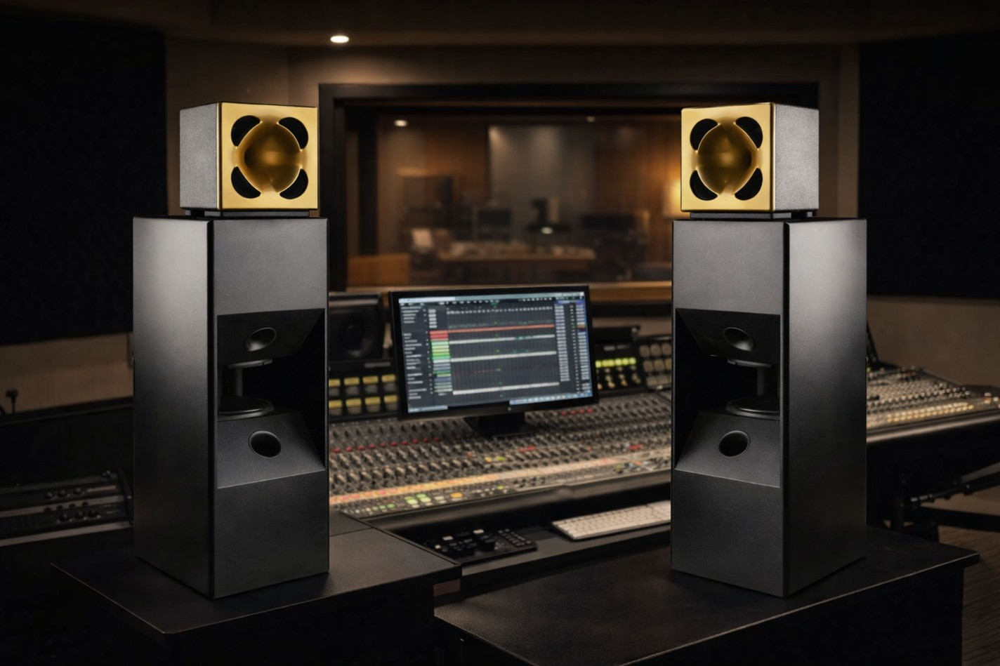

SQUARE TWO
coaxial horn monitor

Acoustic Design
Square Two is a powered 2-way professional studio monitor Special feature of it is a proprietary coaxial horn construction, everything in Square Two is about its horn design and "linear phase" crossover alignment by using IIR instead of FIR filtering
Shape of our coaxial horn was carefully designed to match high frequency compression driver horn response together with four low frequency woofers so that after crossover processing frequency bands are perfectly summed both in phase and frequency on and off-axis
Enclosure design of Square Two is bass-reflex and it can be also converted to sealed box. Bass-reflex will provide more SPL but with more group delay while sealed box will have less group delay but also less SPL

Bass System
For those who desire deeper low-end and higher SPL, we offer a bass system that converts the Square Two into a full-range, three-way system.
With a low-end that reaches effortlessly down to 16Hz in stereo while maintaining phase coherency, it provides all the resolution one could dream of. This allows for fast, confident mixing decisions in the low frequencies, all while keeping the entire system's latency under 5ms.
